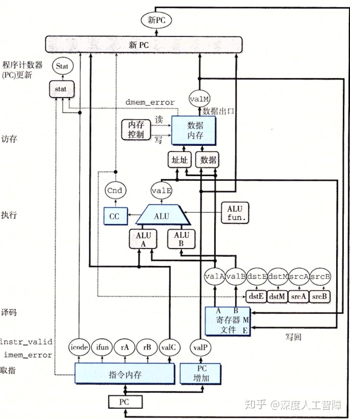
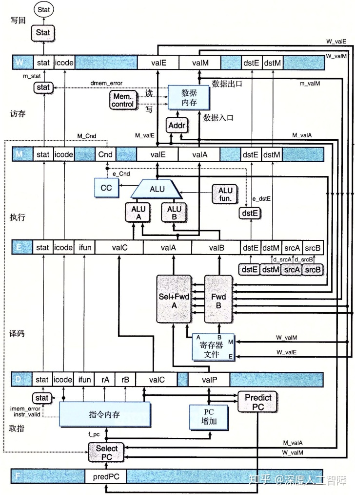

知乎上关于这章的整理——处理器体系结构：基础、处理器体系结构：顺序实现、处理器体系结构：流水线已相当详尽，故觉得没有必要自己做整理了。于是接下来的内容就以泛泛而谈的形式展现。
本章节讨论的问题是如何设计处理器的体系结构来实现汇编指令。 主要可以分为三个部分：1）设计了Y86-64指令集及其编码+介绍了逻辑设计和HCL；2）设计了顺序实现的处理器；3）设计了流水线实现的处理器。 接下来的泛泛而谈也分别从这三个角度出发。
Y86-64：为了便于后续讨论，第四章首先将x86-64指令集简化为Y86-64指令集（本书独创的指令），并提出一些额外的约定，如整型操作数均为8字节、内存只能表示为Imm(rb)形式等。 然后对于所有的Y86-64指令进行编码，比如halt编码成0x00。
HCL：为了描述硬件的输入和输出，本章又约定了一种描述方法，称之为HCL(hardware control language)。其写法和C基本一致，如： a&&b、a||b、!a。特别的，bool s1 = code in {2,3}含义是bool s1 = (code == 2 || code == 3)
组合电路：组合电路（Combinational Circuits）由很多逻辑门组合而成，不储存信息。当输入发生变化时，输出会很快相应变化。 其中多路复用器（Multiplexor，MUX）使得s为1时输出a，s为0时输出b，HCL表达式为bool out = (s && a) || (!s && b)
时钟：为了协调CPU各元件工作，需要一个在高电平和低电平之间周期变化的时钟(clock)，其周期成为时钟周期(clock cycle)。 时钟寄存器（寄存器）(clocked register)：保持输出不变，直到时钟变成高电平才会更新信号，比如输入为x、时钟低电平、输出为y，当时钟改为高电平后，输出才会变成x。Y86-64处理器使用时钟寄存器来保存程序计数器（PC）、条件代码（CC）和程序状态（Stat）。 寄存器文件(register file)与内存(memory)：写入操作受时钟信号控制，只有当时钟为高电平时，才能写入；但是读取操作不受时钟控制。
处理一条指令可以分为以下几个阶段（就直接复制黏贴了）：
顺序实现的处理器就是指：一条指令完全执行完毕后（更新完PC后），才执行下一条指令（当时钟变成高电平后，PC、CC、寄存器文件和内存才会完成更新）。直观上就是按照汇编程序的顺序，一条执行完再执行下一条指令。 通过选择合适的时间周期（时间短会使得指令来不及完成，时间长浪费时间），可以使在一个时间周期内完成一条指令。
显然顺序实现的处理器效率低，当一条指令在后面阶段时，前面阶段就空闲了。好比大家排队买饭要依次经过蔬菜、肉、饭、汤四个窗口，现在要求小A买完汤后，小B才能开始买蔬菜。 很多细节就不涉及了，最后贴一张别人扫描的顺序实现的图：

前面说到食堂排队买饭的故事。现在小A在买肉的时候，小B就可以过去买蔬菜了，显然着效率提升了几倍。而这就是流水线（pipeline）。要使流水线效率高，就要使流水线尽可能的满。
csapp介绍的流水线便是五级流水(five-stage pipeline)，通过五个流水线寄存器（Pipeline Register）将指令处理划分为五个阶段——fetch, decode, execute, memory and write back。
我们之前考虑流水线时，只有当指令之间是不相关时才是完全正确的。但是真实系统中，指令之间存在两种形式的相关：数据相关（Data Dependency），下一条指令会用到这条指令计算出来的结果； 控制相关（Control Denpendency），一条指令要确定下一条指令的位置。这些相关可能会导致流水线产生计算错误，称为冒险（Hazard），包括：数据冒险（Data Hazard）和控制冒险（Control Hazard）。 而本章后续的大量篇幅就在讨论解决冒险的方法。在这也略作介绍。
流水线寄存器有三个状态：stall、bubble、normal。stall意味着即便电平变高，输出仍然不变。bubble意味着寄存器状态设置成某个固定的复位配置，得到一个等效于nop指令的状态，相当于取消该指令接下来的运行。
为了解决这两个流水线冒险，我们需要综合使用暂停（stalling）和转发（forwarding）两个方法来解决问题。stalling就是在一条指令后加入bubble，也就意味着下一时钟周期的某些寄存器会处于bubble状态。 比如，对于jump分支预测错误，需要设置下一个时钟周期的D寄存器和E寄存器为bubble状态。forwarding就是直接把一个流水线阶段的数据传送到另一个阶段。 一般都是利用forwarding来解决hazard，因为这样不会浪费时间。但是遇到load/use hazard时，需要利用load interlock（加载互锁，先stall一下，再forward）来解决。
本章还花了一点时间讨论了异常处理问题，主要原则就是在异常指令之后的指令都不会修改程序员可见状态（看上去异常指令后面的指令没有被执行，其实会有被fetch之类的）。大体思路是，在write-back阶段处理异常（因为流水线处理器按顺序处理指令，最先到达write-back阶段的异常就是最先出现的异常），出现异常后CC与data memory拒绝修改（可保证异常指令之后的指令不会修改内存和条件码）等。
泛泛而谈就差不多如上罢了，具体整理就看看那个知乎的链接就好了。总的来说这章细节很多，自己肯定有许多细节没有搞清楚。本章节在CMU的ICS+课程是不讲的。而且这章甚至为了介绍处理器体系结构而创造了Y86-64指令集，也没有掌握该指令集的必要。个人觉得这章许多内容有点冗杂，同一个知识点讲述不集中，不过作为五级流水的初步了解还算是不错。 处理器体系结构在《计算机组成与设计：硬件/软件接口（第五版）》第四章同样也进行了介绍，动态调度的tomasulo算法在《计算机体系结构：量化研究方法（第六版）》第三章有详细介绍。最后贴一张别人扫描的流水线实现的图：
